WEB DASHBOARD ENERGY MANAGEMENT SYSTEM & SCADA 20kV
Monitoring Real-Time 137 Digital Power Meter, 19 Outgoing Trafo, & Integrasi 20kV Cikarang Listrindo
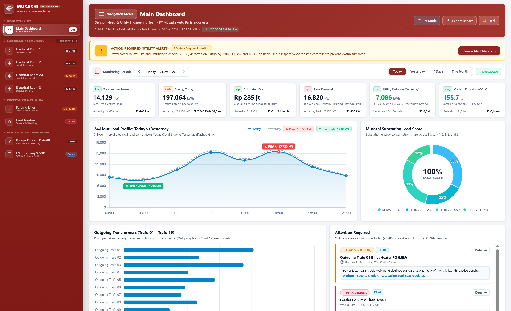
Tantangan Operasional Kelistrikan & Solusi Arsitektur SCADA IoT 3-Tier
Master Dashboard: 'Single Pane of Glass' Monitoring Seluruh Pabrik
Dashboard mengintegrasikan seluruh parameter kelistrikan dalam tata letak visual terstruktur tanpa harus berpindah layar:
Sidebar Menu Pabrik & Kapsul Telemetri Jaringan SCADA 20kV
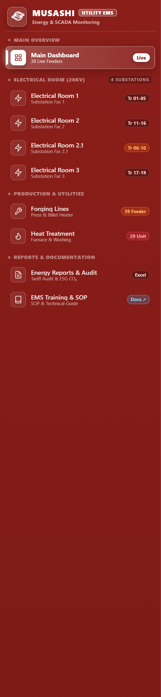
Header Bar Terpusat & Segmented Toolbar Pemilihan Periode
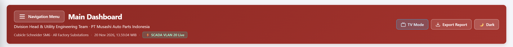
Sistem Peringatan Dini: Pencegahan Penalti Finansial kVARh Listrik
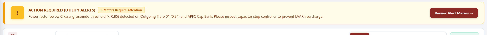
Banner peringatan muncul otomatis pada bagian teratas saat terdeteksi anomali kritis:
6 Kartu Metrik Kinerja Utama: Daya, Biaya, Puncak, & Emisi Karbon
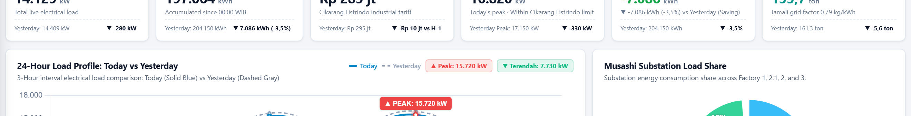
Profil Beban 24 Jam: Penanda Beban Puncak (Peak) & Beban Terendah
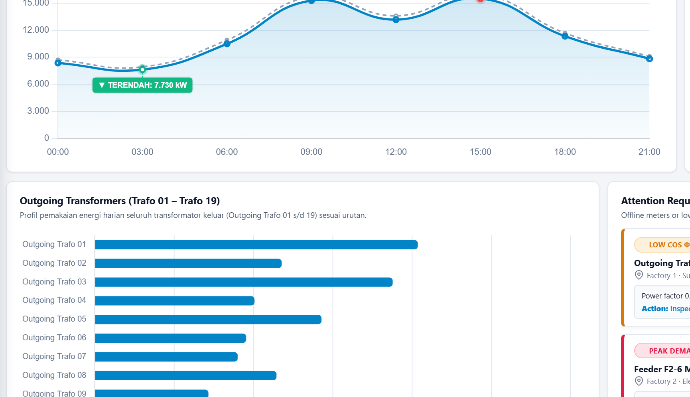
Grafik garis dinamis dengan interval 3 jam yang membandingkan hari ini vs kemarin:
Musashi Substation Load Share: Proporsi Konsumsi Gardu (100% Total Share)
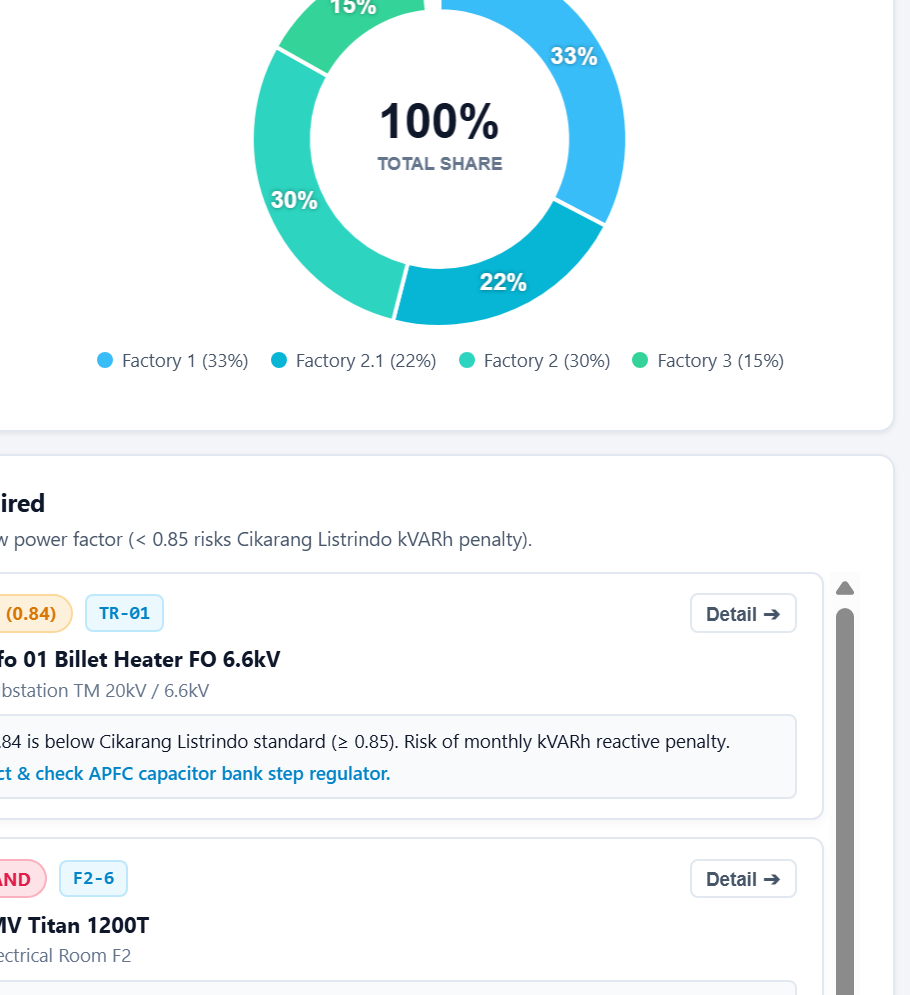
Grafik donat modern dengan rendering persentase langsung pada segmen warna busur:
Outgoing Transformers: Pemantauan 19 Unit Trafo Lengkap Sesuai Urutan
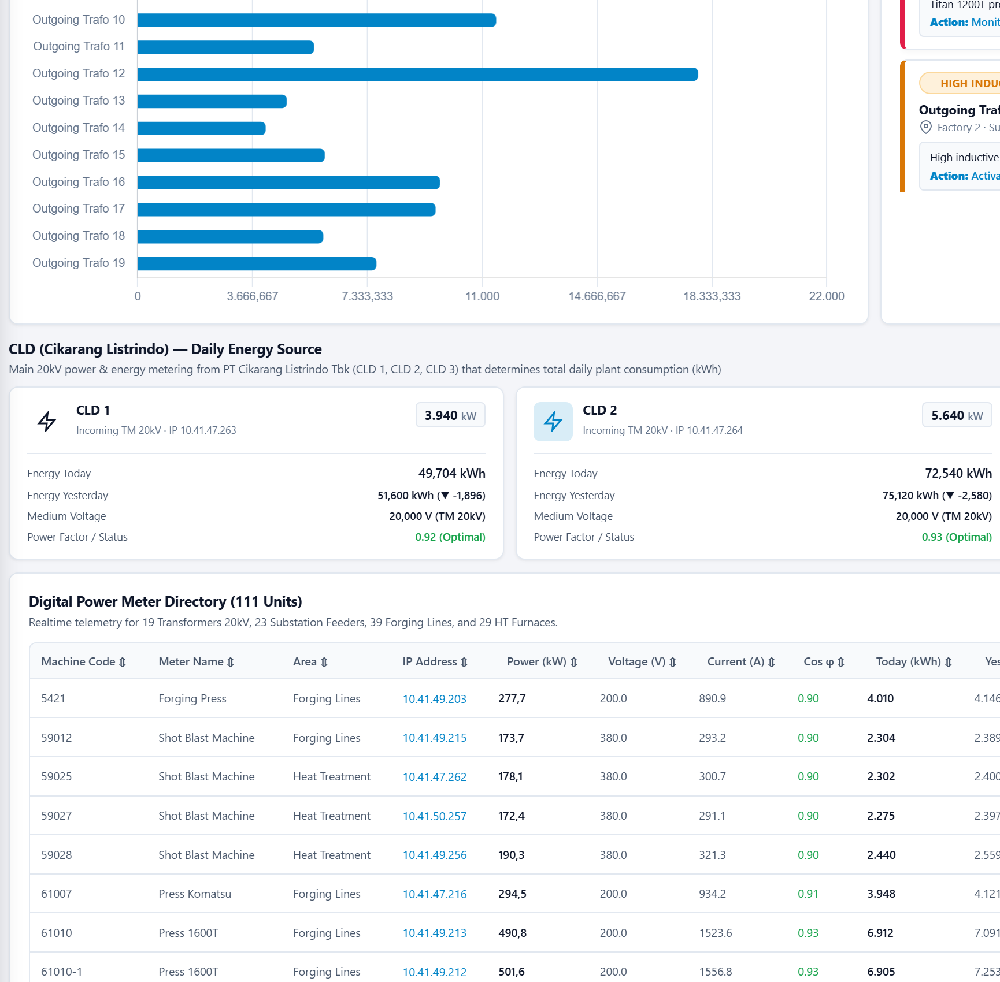
Grafik batang horizontal yang dirancang khusus untuk memuat seluruh 19 transformator keluar:
Attention Required: Daftar Kerja Proaktif Teknisi Substation
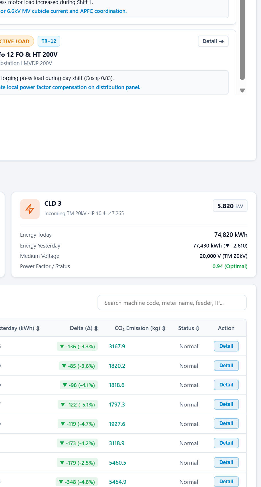
Daftar kerja otomatis berbasis logika SCADA yang menyaring instrumen bermasalah:
Pasokan Utama Listrik 20kV: CLD 1, CLD 2, dan CLD 3 Cikarang Listrindo
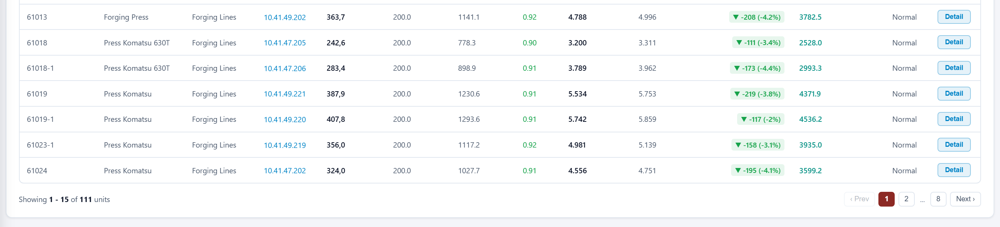
Memantau 3 titik suplai utama tegangan menengah 20.000 Volt dari PT Cikarang Listrindo Tbk:
Direktori Digital Power Meter: Database Telemetri 111 Titik Mesin
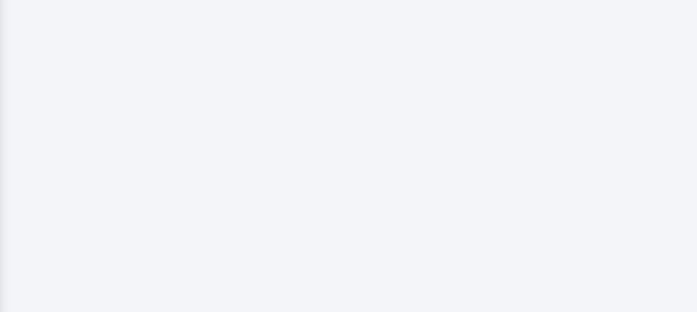
Tabel interaktif berkecepatan tinggi yang memuat seluruh instrumen ukur digital pabrik:
Modal Pop-Up: Analisis Telemetri 3-Fasa R-S-T & Register Modbus Riil

Jendela diagnostik teknik kelistrikan tingkat lanjut saat tombol Action diklik:
Tampilan Khusus Area: Substation Electrical Room 1, Forging, & Heat Treatment

Dashboard menyediakan filter tampilan mandiri untuk masing-masing area produksi:
Pusat Pelaporan Audit Energi ISO 50001 & Dampak Nyata Operasional
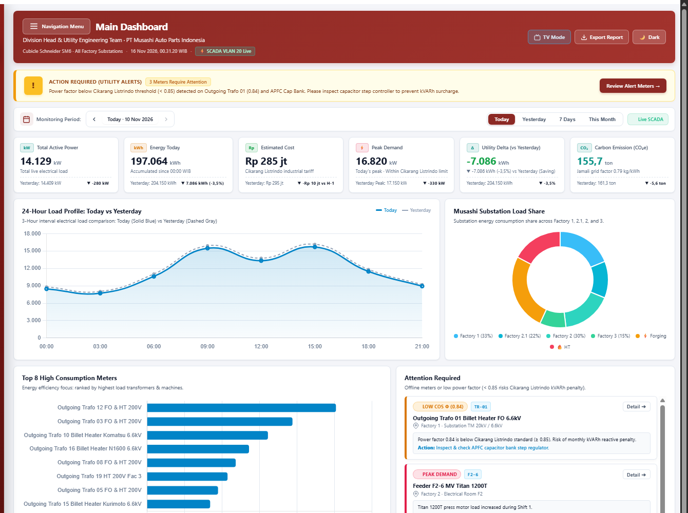